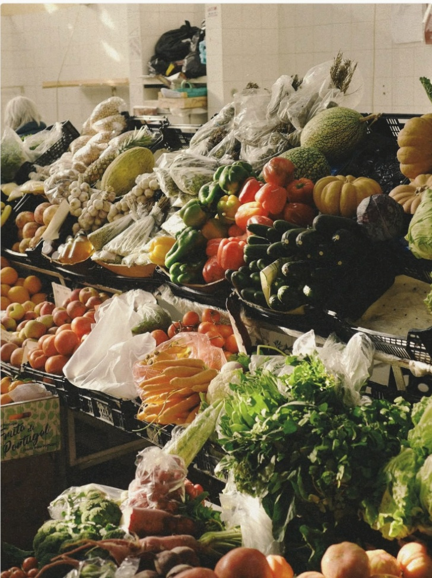

La Mesa
Momentos para vivir con otros, más allá de la mesa.
Encuentros de comunidad que no dependen de comprar nada en concreto. Es la parte de Arrel que no se envuelve ni se hornea: se vive.

Qué pasa en La Mesa
Seis formas de encontrarnos.
01
Cenas en reflexión
Cenas pausadas, pensadas para parar y hablar — no para llenar una agenda.
02
Yoga y pilates
Movimiento antes — o después — de sentarse a la mesa.
03
Talleres de belleza
Cuidado personal con los mismos principios: presencia, calma, ingredientes de verdad.
04
Desayunos
El primer encuentro del día, despacio.
05
Catas
Descubrir un ingrediente o una técnica de cerca, con quien lo trabaja.
06
Colaboraciones
Con otras marcas y oficios que comparten mirada.
Calendario
Todavía no hay fechas publicadas.
Estamos preparando los primeros encuentros — si quieres que te avisemos en cuanto haya fecha, escríbenos.
Avísame del próximo encuentro